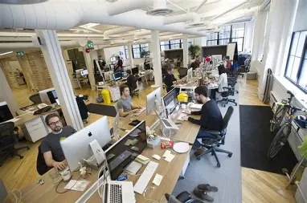

Un parcours entre deux continents, de la Guinée à la France, façonné par des expériences diverses dans la comptabilité, le contrôle de gestion et l'enseignement.
IUT de Sceaux — Université Paris-Saclay

Ravensera (Artémus & 24 Terre)
Ninkasi Cordeliers — Lyon, France
Orange Guinée SA — Conakry
Conakry, Guinée
Saticom SAS — Conakry
Mission Baptiste de Guinée — Conakry
Université Général Lansana Conté de Sonfonia — Conakry
American Corner — Bibliothèque Américaine, Conakry
Allah Wally Boulangerie — Kamsar
En ligne
Lycée Albert Bauer — Conakry, Guinée
IUT de Sceaux — Université Paris-Saclay
Ravensera (Artémus & 24 Terre)
Ninkasi Cordeliers — Lyon, France
Orange Guinée SA — Conakry
Conakry, Guinée
Saticom SAS — Conakry
Mission Baptiste de Guinée — Conakry
Université Général Lansana Conté de Sonfonia — Conakry
American Corner — Bibliothèque Américaine, Conakry
Allah Wally Boulangerie — Kamsar
En ligne
Lycée Albert Bauer — Conakry, Guinée
Des projets concrets qui allient théorie et pratique, en équipe et en autonomie.
Application mobile centralisant les services pour expatriés (logement, emploi, démarches administratives, intégration culturelle).
Fabrication de pièces de rechange en plastique recyclé via impression 3D sur campus universitaires.
Accompagnement d'une PME industrielle de 135 salariés dans l'implémentation d'un ERP.
Enquête terrain auprès de managers sur le cadrage et l'atteinte des objectifs.
Je suis disponible pour un stage en comptabilité ou contrôle de gestion.